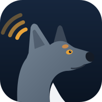

Waking up the radio dog…hang on, this takes about 10 secondsQuick send
Radio status
offlineGPS
Recent calls
- No calls yet
Recent messages
- No messages yet
RSSI, last 10 minutes
Event log
VFO / Channel
—Push to talk
idleCCDI transmit does not stop on the radio's Tx timer. Kelly releases it after 90 s (Admin).
Volume
12Squelch
CCDI has no squelch-level command; Monitor overrides the squelch, CCR mode adds full control.
Transmit power
Functions
Emergency
Front panel
Current call
idleMake a call
P25 services
Call history
| Time | Dir | Type | From | To | Detail |
|---|
Last heard
Inbox
Preset message
CCDI sends P25 messages to a unit, so talkgroup presets go to the group relay ID set in Admin (default the P25X gateway).
Status update
P25 status 1–16Status board
History
Radios
0Today's tracks
Nearby APRS
Fixed position · APRS
offNo GPS in the radio? Give it a fixed position: Kelly sends it over P25 to the P25X Reflector, which beacons it to APRS (aprs.fi) and the network map as your Callsign-SSID. "Internet" sends it straight to APRS-IS through the Kelly bridge instead.
Locate a radio
via the P25X gatewayKelly asks the P25X gateway to poll the radio's GPS -- a Tait SDM location poll for a Tait radio, LRRP for a Motorola APX -- and the fix lands on this map. Auto goes by what the network has heard the radio as; it needs to have keyed up on a repeater recently. A Tait answers only when its location format is Tait SDM.
This radio
LoRa Mesh
Meshtastic ↔ P25📣 Calling now
Mesh Quest
records · trophies · missions · club leaderboard🔁 P25 bridge
Kelly joins your LoRa node (Meshtastic, MeshCore or LoRa APRS) and your P25 radio. Bridged texts are plaintext and carry your callsign, so they ID. A [P25 text never goes back to P25 and a MESH text never goes back to the mesh.
⚠️ Direct mode only sees the texts this radio receives. It can't see radio emergencies, status messages or site alarms on the P25X network. Only the gateway's Tools > Mesh alert bridge sees those, so a rule for emergency, status or alarm does nothing here.
Rules (the same JSON as the gateway's Tools > Mesh alert bridge)
Addressing: on the mesh, @VK4ZSR hello goes to that ham's P25 radio. On P25, @mesh @VK4ZGW hello goes to that ham's mesh node, and @re thanks answers the mesh station that last reached you.
🧠 Packet paths & golden packets
Hearing a station far away is one-way. A golden packet is the other half: a packet you sent that reached it, proven by its answer. Hover a station on the map for every hop its packets took (⬇ heard via, ⬆ route to it, 🥇 two-way).
🪙 Golden Packet token
One signed packet the club passes station to station. Each hand-off is a DM your node signs, so a token belongs to a radio, not a browser; the P25X gateway keeps the ledger and refuses a second hand-off of the same token.
📇 Contacts
Your node keeps its own contact list. Share a contact one hop over the air, swap contacts as meshcore:// links (the MeshCore phone app reads them too), remove one, or rename your node.
📈 Mesh trends
What your node has heard over time, kept by the bridge (--mesh-history): signal, traffic, airtime, battery and how often DMs get through. Pick a station to see its own history. Hover a chart for the value at that time.
📡 Repeater management
Look after a MeshCore repeater over the air, through your own node: log in with its admin password, then read its battery, noise floor, airtime and the stations it hears, or run its commands. A wrong password gets no answer at all, so a failed login takes about 16 seconds.
🏠 Rooms
A MeshCore room server is the mesh's notice board. Log in (its guest password, or blank to read only), and it sends you the posts you haven't had, one at a time. Your post goes to everyone in the room.
📻 Channels
Your node's channels. Public and #hashtag channels are open to anyone; a 🔐 private channel's QR code is its key. Add one from a QR, a picture, a pasted link or a #name: Kelly shows it first and adds nothing until you press Add.
🔧 Set up a node over USB
Nodes
☁️ No node? Ask the gateway (Meshtastic)
The P25X gateway listens to Meshtastic MQTT. It sends you the nodes and recent mesh chat around your position over P25 packet data. You don't need a node of your own.
🔊 Mesh sounds & effects
Node log
⚠️ Path hash size check
Nodes heard using a different path hash size from this network's (set in the MeshCore Analyser).
| Radio ID | Alias | Type | Last heard | Last status | Notes |
|---|
| TG | Name |
|---|
P25X radio aliases
—RadioID.net issues one DMR ID per callsign, but you may run several radios. On P25X each extra radio swaps the leading 5 of your 505 DMR ID for a radio number 1-4 or 6-9: 5050002 → 1050002 (TP9400), 2050002 (Motorola). Kelly looks an alias up under its DMR ID for the callsign and name, and keeps each radio's own ID everywhere else. MMDVM / BrandMeister don't do this -- switch the rule off on those networks.
Add a radio
Look up an ID
Lookup service
Alias table
| P25X ID | DMR ID | Radio | Callsign | Name | Location | Last heard |
|---|
Sync from gateway brings in every alias radio the P25X network has heard (marked gw) with its callsign and name -- no internet or bridge needed. Entries you've made yourself are never changed. Your entries win over the rule. Rows marked auto are aliases heard on air that the P25X rule resolved by itself -- add them to give the radio a name.
P25X bulletins
Notices sent to every radio on the P25X network from the gateway (dashboard Tools › Bulletins). Kelly keeps them here; urgent ones also sound the Bulletin alert and stay on screen until you open them.
📟 P25X PBBS
🖥️ Terminal
How packet BBSes were used for decades: type a command at the prompt. Answers come at real packet speeds, with the Bell 202 modem sound. H lists the commands. Click the screen to skip ahead.
✍️ New message
0 B⌨️ P25X RTTY
🎯 His call
⚙️ Machine & station
📒 Logbook
QSOs the gateway confirmed (✅) are logged by themselves; add others from the His call panel. P25X QSOs export as MODE RTTY with "over P25 data" in the comment -- they aren't HF contacts, so don't upload them to LoTW as such.
| UTC | Call | Name | QTH | RST s/r | Band | QSL | Notes |
|---|
🎨 RTTY art
A piece costs ~10 bytes on P25: every Kelly prints it from its own copy. On HF it's keyed line by line, the old way.🪧 Banner
🪪 QSL card
Sends a printed QSL card to His call -- a token on P25, the card at every machine.
🎞️ Paper tape
Every character the machine prints is punched on the tape under the paper (five holes a code, the sprocket between). Save the tape, or feed one in.
🗞️ News printer
PBBS bulletins printed on the teleprinter, the way the wire services and W1AW sent news by RTTY. Each one is fetched when you print it.
📻 HF modem
OffReal RTTY on your HF rig through the PC's sound card: the rig's audio out into the PC, and (for transmit) the PC's audio into the rig with VOX. Kelly makes the audio; the transmitter and the licence are yours.
📖 The Baudot code
Five holes a character, 1 = mark. Two shifts share the codes: LTRS and FIGS. The code printing now lights up.
🗓️ Worldwide RTTY contests
🌍 RTTY on the air now
🔤 The RTTY shorthand
💾 Kept on this computer
P25X code plugs
—The status and preset-message lists every P25X radio is programmed with -- the same lists as the P25X dashboard's Code Plugs page. Statuses and presets go over the air as numbers only, so a number must mean the same thing on every radio. The TM9100 holds 16 of each (its hard maximum); the TM9400 holds hundreds, built around the TM9100's: the same first 16, then extended. Copy (TSV) grabs a table tab-separated (header + rows) to paste straight into a spreadsheet or the programming application's grid.
Load a call list
nothing pastedGet from gateway fetches the P25X network's latest call list over P25 packet data and adds it straight to your Directory. Or, on the P25X dashboard open Code Plugs › Call List and press Copy (TSV), then paste it here -- or drop the saved file on the box. Anyone can share theirs the same way with this page's own Copy (TSV). The names go into your Directory, so they show on calls, messages and the map, and in every To box.
| Unit ID | Label | In your Directory |
|---|
Call list
The last list loaded, in the same columns as the dashboard and the programming application, ready to pass on.
| Unit ID | Label | Heard |
|---|
Get a radio config
idleBase configurations kept on the P25X gateway, fetched over P25 packet data. Pick your radio's model and ask for the list, then fetch a file -- it comes down in checked chunks and is only offered for saving if every byte matches the original. Program it into your radio with the Tait programming application. A file holds the repeater for its whole transfer (about a minute and a half for a typical TM9100 file).
| File | Size | On air |
|---|
Received
| File | Model | Size |
|---|
Send a config to the gateway
idleSend your own radio's file to the P25X gateway inbox, for checking. It goes compressed and checked end to end; you'll see Delivered once the gateway has every byte.
Status list
Fixed list -- TM9100 maximum is 16 status entries.
| Status ID | Label |
|---|
Preset message list
Fixed list -- TM9100 maximum is 16 message entries.
| Message ID | Label |
|---|
Status list
| Status ID | Label |
|---|
Preset message list
| Msg ID | Label | Control Message Type | Receive | Transmit |
|---|
System events
CCDI reports calls, services, data, channel and NAC events. Raw registration / affiliation / grant TSBKs need CCR mode with the radio's P25 Protocol API feature (Developer › CCR › P25 progress).
| Time | Category | Event | Unit | Detail |
|---|
Averaged RSSI (dBm)
Packet monitor
| # | Time | Dir | Id | Name | ✓ | Summary |
|---|
Click a packet to decode it.
Location reports
| Time | Radio | Lat | Lon | Speed | Heading | Fix | Raw |
|---|
MQTT output
disconnectedPublishes every decoded radio event as JSON to a broker with a WebSocket listener. Topics: kelly/<serial>/…
P25 packet data setup
Transparent mode
commandRadio becomes a modem: everything typed is sent over the air. Leave with the escape sequence (2 s idle, three escape characters, 2 s idle).
P25X Insights
Activity timeline
Activity by hour of day
Today's awards
Weekly leaderboard
| # | Callsign | Transmissions |
|---|
🤐 Today's leading kerchunkers
Keying up without saying anything -- transmissions under 3 seconds, today.
| # | Callsign | Kerchunks |
|---|
Userlist
Every caller ever heard on the P25X network -- how often and how long they've keyed up. Click a heading to sort.
| Callsign | Name | Radio ID | Calls | Talk time | First heard | Last heard | Last repeater |
|---|
Ask the P25X gateway for the weather -- it comes back over P25 packet data in a few seconds, about half a kilobyte on air. Pick your repeater's town, your own position, or any town.
Next 24 hours
7 days
🌧️ Rain radar
BOMThe last 25 minutes of the BOM radar you pick, showers only. The gateway shrinks it to a few kB (a few seconds on air on a dry day, 10-20 s on a showery one) and Kelly draws the map underneath.
📋 BOM observations
QueenslandThe latest readings from BOM's Queensland weather stations (the same figures as bom.gov.au's QLD data bulletin): temperature, feels-like, humidity, wind, pressure and rain since 9am. The nearest 12 are about 0.6 kB on air; all of Queensland is about 4 kB.
⛈️ Storm alerts
offThe P25X gateway watches your repeater's town every 15 minutes and sends an alert over P25 packet data the moment one of these turns up -- Kelly sounds the alarm on any page. Not parked in Transparent? It comes as a text, and Kelly still raises the alarm.
📷 Club weather cameras
ozforecastThe club's cameras send a photo a minute to ozforecast. Ask for the latest photo or a short time-lapse and the P25X gateway shrinks it down to a few kB, a few seconds on air. One request at a time; the last set from each camera stays here after a reload.
☀️ Sarina Solar
Today
the controller's own daily logModbus TCP over P25
read-onlyKelly speaks Modbus itself: each reading is a real Modbus TCP request (function 3, read holding registers) carried in one small P25 data call to the P25X gateway, which passes it to the controller at Sarina and sends the controller's own answer straight back. Kelly decodes the registers here. About 22 bytes up and 75 down per reading.
⚡ QLD Grid Power
Generation mix
SEQ Grid Map
A logical picture, not a map of the real network: each fuel box is all of that fuel across Queensland (the stations named are examples), and how demand divides between the SEQ towns is a fixed illustrative share. Grid frequency isn't shown -- Open Electricity doesn't publish it. For substation-level SCADA, breakers and DNP3 packets, open the DNP3 Demo page.
🗼 APRS iGate
iGate station
—APRS-IS server, filter and limits
📍 Beacon my position over MeshCore
off📡 MeshPRS frames
offLast gated per station
| Station | When | Packets | Last packet |
|---|
🗼 My list
| As | Node | Symbol |
|---|
| Callsign | Node | Symbol | Comment | From | Telemetry |
|---|
📈 Telemetry
| Source | Reading | Value |
|---|
| Source | Name | Unit | Min | Max | Now |
|---|
and 8 on/off bits
| Source | When | Value | Name | Now |
|---|
📡 Shared devices (P25)
The shared list
| Callsign | Node key | Symbol | Comment | Shared by |
|---|
🔐 Club list (known users)
Admin: edit and publish the club list
| Callsign | Node key | Symbol | Comment | On | Added | Edit |
|---|
Log
drops, queued and sent packets; the bridge's raw APRS-IS lines💧 SEQ Dam Telemetry
Link health
Lamps light on each request and answerLast answer · decoded
RealOn the air · KF container
Station telemetry
Inflow · storage · outflow
Storage change
since yesterdayRiver gauges
WMIP telemetry, biggest flow first🚨 SEQ Hazard Watch
Markers show the general area of each incident. For warnings and travel advice use QFD's alerts and QLDTraffic -- this page is a radio demo, not an official service. Fires © State of Queensland (QFD), road events © State of Queensland (TMR) QLDTraffic, both CC BY 4.0.
P25 radio & AVL terminal
SIMULATED -- training onlyEach dispatch you play out from the map appears here as invented P25 traffic on made-up club talkgroups with SIM units: grants, short data messages, EN ROUTE / ON SCENE statuses and AVL (LRRP) positions as the unit drives in. Nothing real is intercepted or decoded.
Real data path
REALThe gateway's answer exactly as it crossed the air (packed KF container):
Signal
Incident Response Drill
Badges
🌞 Space Weather
GOES X-ray flux (0.1-0.8 nm)
REALPlanetary Kp, 3-hourly
REALBand conditions
ESTIMATEWorked out from solar flux, Kp and X-ray flux for Brisbane's sun angle -- a teaching estimate, not a forecast. The column for the current time is highlighted.
MUF & absorption
ESTIMATEAbsorption from NOAA D-RAP's rule: 1 dB at the highest affected frequency, 10·log₁₀(flux) + 65 MHz, falling as f⁻¹·⁵, on the sunlit side only.
What it does to our links right now
Flare absorption by band
ESTIMATEBand noise
Six seconds of what a band might sound like now: static rises with Kp, and a weak CW "CQ" fades with that band's flare absorption.
Real data path
REALThe gateway's answer exactly as it crossed the air (packed KF container):
Blackout Survival
Kp forecast log
scored on real KpSolar School
Badges
🛰️ ISS Tracker & Auto-Tuner
Sky dome
Doppler at 145.800
Lines are the 5-channel bank; the curve is the real shift for the pass.
Next pass
Radio
Auto-tune
receive only -- never transmitsArmed, Kelly retunes for every pass above the minimum elevation while it is open on any page: an alarm 5 minutes before, the radio saved and retuned at AOS, put back 15 seconds after LOS. Start with the dry run, then a bench test pass with the radio on the desk. CCR mode needs a VHF radio with CCR enabled; leaving CCR reboots the radio (~10 s).
Where you are
Coming passes
| Day | AOS | Max | LOS | Length | Path |
|---|
Radio command log
Listen & record
Feed the radio's speaker or line-out into the PC's audio input. Kelly shows the spectrum and waterfall and records the pass to a file you can save -- decode SSTV images from it with an SSTV program such as MMSSTV or QSSTV.
Pass log
Badges
ISS frequencies (ARISS)
| Service | Downlink | Uplink | Tone | Notes |
|---|---|---|---|---|
| Voice (crew contacts, ARISS schools) | 145.800 MHz FM | 144.490 MHz (Regions 2 & 3, incl. Australia); 145.200 (Region 1) | none | Split -- the crew listen on the uplink |
| SSTV events | 145.800 MHz FM | -- | -- | Usually PD120 / PD180; announced on ariss.org |
| APRS digipeater | 145.825 MHz | 145.825 MHz (simplex) | none | 1200 baud AFSK packet |
| Cross-band FM repeater (when active) | 437.800 MHz FM | 145.990 MHz FM | 67.0 Hz CTCSS on the uplink | Doppler on the 70 cm downlink is about ±10 kHz |
The uplink tone for the cross-band repeater is 67.0 Hz, not 88.5 Hz, and the 145.800 voice downlink has no tone. Listening needs no licence; transmitting to any ISS uplink needs an amateur licence -- and this page never transmits.
Doppler and why the steps matter
The ISS moves at about 7.66 km/s. As it comes towards you the radio waves bunch up and 145.800 arrives a few kHz high; overhead the shift passes through zero; going away it arrives a few kHz low. Received frequency = 145.800 MHz × (1 − range rate / speed of light).
The ISS transmits wide FM (about ±5 kHz deviation, a 25 kHz-style signal). On a wide (25 kHz) channel a 3.4 kHz offset is mostly tolerable; on a narrow (12.5 kHz) channel the signal is already wider than the filter and a few kHz of offset pushes it off one edge -- loud distortion and dropouts. Stepping 2.5 kHz (the bank) keeps you within ±1.25 kHz of centre; CCR's 500 Hz or 1 kHz steps keep you within a few hundred Hz. Your radio rounds to its own synthesiser step, so check that it supports 2.5 kHz channel steps on 2 m.
Band plan: the Australian 2 m band uses 25 kHz channel spacing for FM simplex and repeaters, with 12.5 kHz narrowband channels in between; satellite frequencies 145.800-146.000 MHz are kept clear for space use.
Programming table -- 5-channel Doppler bank
| Channel | RX | Offset | When | RX tone | Bandwidth | Mode |
|---|
Program these as receive-only analogue channels (TX inhibit) in the radio's programming application. Since the real shift tops out near ±3.4 kHz, CH1 and CH5 (±5 kHz) mostly catch the first and last seconds of a low pass.
Setup guide
- Position: set Kelly's fixed position (GPS page) or let the radio's GPS fix it; or use the browser location / type it in on the Radio Automation tab.
- Elements: press Fresh elements once with a radio connected -- the P25X gateway fetches the ISS TLE from CelesTrak (about 170 bytes over the air). Kelly refreshes it at most once a day.
- Radio link: connect the radio over serial (Admin › Serial) or the IP bridge, in Command or Transparent home.
- CCR mode (best): needs a VHF Tait with CCR enabled in its programming (Tait Radio API). Kelly enters CCR at AOS, selects analogue FM, wide bandwidth, opens the squelch and tunes the receive frequency in Hz -- then leaves CCR at LOS (the radio reboots) and goes back to your channel.
- Channel bank: program the five channels above, set the zone and first channel here. Kelly opens the squelch with the monitor function and steps channels as the Doppler moves.
- Test: tick Dry run, press Bench test pass and read the command log. Then untick Dry run and run it again with the radio on the desk. Then arm it.
🔌 DNP3 Demo
A substation, its DNP3 outstation (RTU) and a SCADA master, all in this page. Switch plant on the Substation tab, control it over DNP3 from the SCADA Master tab, and read every frame byte by byte in the Packet Inspector. Run it all in this page, or put the DNP3 on air: this Kelly as the outstation (RTU) with the NUC or another Kelly as the master, or the other way round.
NUC as the master: on the dashboard's DNP3 MASTER page set the site IP to this radio's repeater, the outstation address to the one above and the master address to match. Its breaker TRIP / CLOSE switch F1 here.
Every frame goes up to the P25X gateway, which passes it down to the outstation's radio. Another Kelly as the outstation needs the gateway's DNP3 forwarder.
Selected
Alarms
Sequence of events
This RTU on air
Master
Control (CROB, group 12 var 1)
Events received
| Object | Point | Value | RTU timestamp | RTU clock error |
|---|
Binary inputs
Analog inputs
| # | Point | Raw | Scaled |
|---|
Master log
Outstation log
Captured frames
| # | Time | From | B | Summary |
|---|
Decode
hover a byte or a rowPick a frame on the left.
Time sync
IIN1.4 NEED TIMEEvents stamped with time (g2v2, g32v3, g32v7) carry the outstation's own clock, so a wrong clock means wrong event times -- compare the "RTU clock error" column on the SCADA Master tab before and after a sync. Group 80 var 1 is not time sync: the master writes it to clear IIN1.7 DEVICE RESTART.
Sequence diagram
the last 14 framesWhich objects carry a timestamp
Send a picture
to the P25X dashboard or another radioTransfer
idleLast received
Digital pictures in 240-byte chunks over P25 Transparent; the dashboard asks for any missing chunks and acknowledges the picture. Pictures from the dashboard arrive here too -- in CCR home, Kelly steps out of CCR briefly to answer. Each picture holds the repeater for ~10-30 s.
Gallery
CCDI terminal
Every CCDI & CCR command
—Message decoder
TSBK decoder
Checksum calculator
CCR -- computer controlled radio
not in CCRCCR takes the radio over completely: frequencies, tones, NAC, power and raw P25. Nothing is saved; exiting CCR reboots the radio. Entry is refused while scanning, transmitting or in emergency.
All CCR commands (tones, DCS, selcall, ANI, NAC, modulation, custom TSBK/LDU1…) are in the Command builder under the CCR groups.
Live state
Event stream
In the browser console: kelly.send('q0'), kelly.on(ev => …), kelly.state, CCDI.cmd.*.
Personality
⬆️ Kelly updates
idleGet a new version of Kelly Page over the internet from kellypage.app (a few seconds), or from the P25X gateway over P25 packet data, with no internet needed. Over P25 a release is about 500 kB: roughly 20-25 minutes of repeater time, sent in pieces of about 2 minutes with gaps so others can talk. Choose Quiet hours to fetch it between 10 pm and 6 am: leave Kelly running and connected, and it picks up where it left off -- even after a reload.
Install writes the update straight into your Kelly Page folder -- the first time, pick that folder (the one with index.html in it); after that it's one click. Every file is checked before anything is written, and Kelly reloads when it's done.
- Admin › Save my config first, just in case.
- Close Kelly Page, unzip the update and copy the Kelly Page folder over your old one.
- Open Kelly Page again -- your settings stay in this browser.
Connection
offlineChrome or Edge on the desktop. The browser asks which port: pick the radio's cable (COM5 on the bench). 8-N-1, as set in the radio's Tait Radio API form.
Run python bridge/kelly_bridge.py --serial COM5 (or --tcp host:port) on the machine wired to the radio.
A simulated TP9400 with five radios doing calls, texts, status and GPS. Every page works.
🪪 Register this station
…Some networks offer services to registered stations. Register here with your callsign and radio ID: once it's approved, Kelly collects your registration by itself and keeps it renewed. The key belongs to this device -- a registration made for it doesn't work anywhere else.
- Status
- …
- Device key
…- Fingerprint
- …
- Key kept by
- …
- Valid until
- —
Have a token already? Paste it
Radio identity & licence
- Model
- —
- CCDI version
- —
- Serial number
- —
- Model name
- —
- Software
- —
- Database
- —
- FPGA
- —
My station
Behaviour
Function keys used for
On connect, turn on
Look & sound
Alert sounds
built-in sound, your own file, or the tonePacket sounds
a data chirp when the radio sends or receives a packetIf a sound file won't play (missing, unsupported, or the browser blocks it), Kelly plays the tone instead. Your own files are kept in this browser, up to 512 kB each -- a short mono WAV is best.
Status & preset labels
Configuration file
Save your set-up as a small .xml file -- settings, your radio and talkgroup lists, P25X aliases, status / preset labels, APRS position and alert sounds -- and load it into a new copy of Kelly after an update. No logs, messages or positions. Loading adds to your radio, talkgroup and alias lists (the file wins where both have an entry) and replaces the settings and labels.
Data
Support log
idleSomething not working? Send a support log to the P25X gateway so the operator can see what happened: Kelly and radio versions, the connection, recent events and errors, file transfers and channel activity. Passwords, tokens and licence details are never included. About 10 kB, roughly 30 s on air. If the radio link itself is the problem, save it to a file and email it.
About Kelly Page
A P25 operating console for Tait radios: radio control, calls, messaging, status, GPS and protocol tools over the Tait CCDI interface.
Operator's manual › · Brand guidelines & logo files ›
MeshPRS is an open standard for carrying APRS over MeshCore: positions, messages, telemetry and objects in small frames on the #meshprs channel, gated to APRS-IS by iGates like Kelly's. Kelly is its first implementation. MeshPRS on GitHub ›
Live on the P25X network: p25x.app › -- who's on air now, recent messages and SSTV pictures. · Kelly Page home: kellypage.app ›